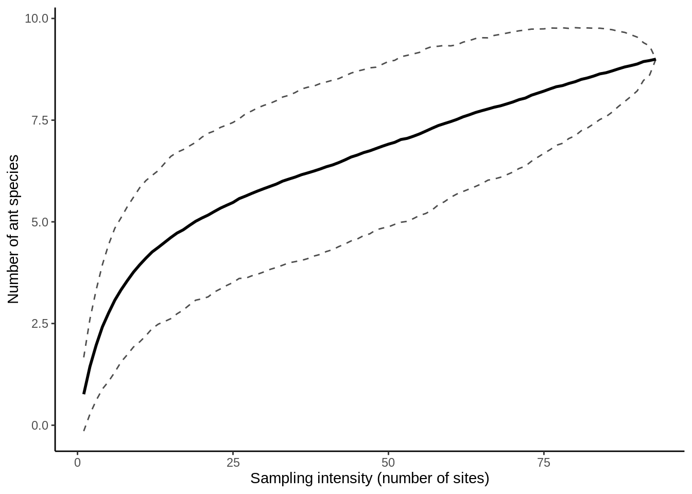
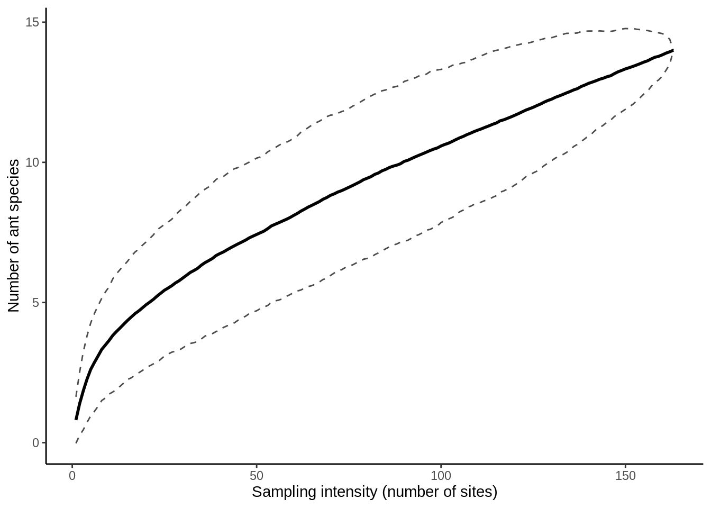
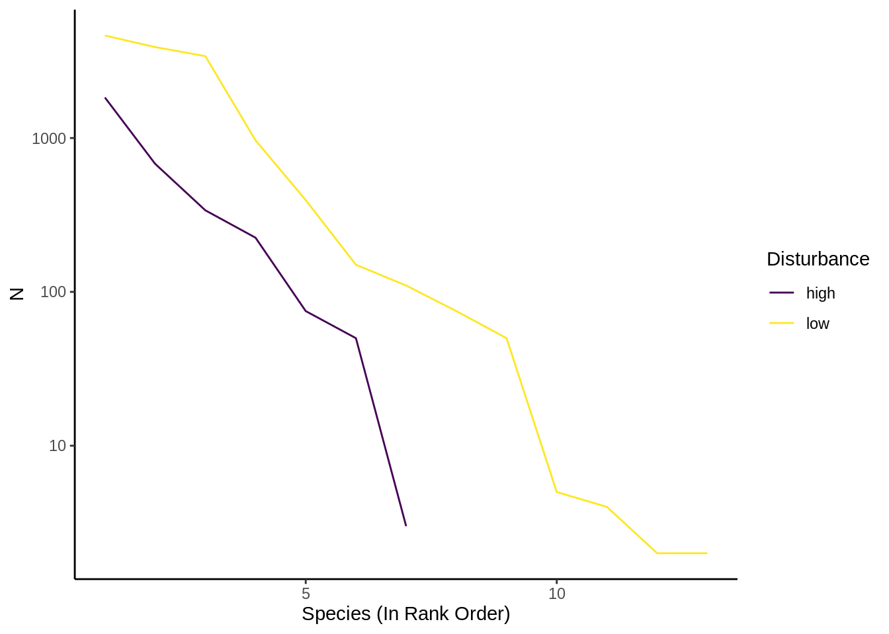

17 Homework: Ant Community Ecology and Invasive Fire Ants
17.1 Required Reading
This homework will prepare you to analyze the data from the Ant lab. You should read over that the material to properly understand the data you’ll be working with here. You should be familiar with the materials in Chapters 4, 5, 6, and 7.2. I will also use code from Chapter 8 to reshape the data, although fully understanding it is not necessary for this exercise.
17.2 Objectives (and what’s due)
There are four primary questions in this lab, along with the associated results you’ll be submitting:
What are the habitat preferences of Solenopsis invicta?
- Submit: Three contingency tables (one per contrast) showing the contrast vs. Fire Ant presence/absence; cell contents should be the number of baits that meet he conditions. With each table, submit a chi-square or Fisher’s exact test (as appropriate).
- Submit: A contingency table showing if the interaction of canopy openness & disturbance affect fire ant presence, along with a relevant statistical test.
How do different habitat characteristics affect the ant community?
- Submit: The Jaccard index of similarity for each contrast.
- Submit: The Shannon diversity for each contrast.
- Submit: A Species accumulation curb comparing sampling effort and estimated species richness for each contrast.
- Submit: A rank abundance curve comparing species evenness for each contrast.
17.3 Getting started
You’ll need to download F21_ant_data.csv and put it in your data directory.
# MRR Lab Analysis
#### Setup ####
# Load packages & data
library(tidyverse)
# install.packages("vegan") # uncomment if necessary
library(vegan)
theme_set(theme_classic()) # Removes gridlines from ggplot
raw_ant_data = read_csv("data/F21_ant_data.csv")17.3.1 Contrasts
Most of these analyses will focus on ecological contrasts. There are four contrasts we’re interested in with this lab:
- Open (canopy cover 0 or 1) vs. Closed (canopy cover 2 or 3) canopies.
- Sparse (0/1) vs. dense (2/3) ground cover.
- Low vs. high disturbance
- Habitat types (Quarry vs. River Terrace vs. Old Pasture). This column isn’t present in the homework data (so you don’t need to do it now), but it will be included in the data you collect.
17.3.2 The data
The columns of this data frame that are:
- Acre: Acre ID.
- Site: Site number, 1-16 per acre.
- Fire_ants_present: “Y” or “N” for fire ant presence at site.
- GPS_easting, GPS_northing: Location of site; ignore.
- Phorids_present: Ignore this.
- Canopy_cover, Ground_cover: Canopy or ground cover at site, from 0 (none) to 3 (full), as per heterogeneity lab.
- Disturbance: “high” or “low” disturbance at site.
- Field_Notes: Notes from the field data collection
- Name: Student Name; ignore.
- Total_ants: Total number of ants caught at site.
- Solenopsis invicta, and a large number of other species-names: Number of that species present at the site. Note that these columns have spaces in their names, so to use them, you need to surround them with back-ticks (`, on the ~ key).
- Other species: Other species present; you can generally ignore this.
We’ll need to re-define some our columns to fit the above contrasts; you can use the if_else() function inside mutate to do this.
wide_ant_data = raw_ant_data |>
# Remove unnecessary columns
select(-GPS_easting, -GPS_northing, -Phorids_present, -Field_Notes, -Name, -Total_ants, -`Other species`) |>
mutate(
Canopy_cover = if_else(Canopy_cover %in% c(0, 1), "Open", "Closed"), # see ?if_else() for details
Ground_cover = # define as sparse vs. dense
)We’re also going to transform the data into a long format using pivot_longer (8.2).
# Get a list of species columns
ant_species = wide_ant_data |>
# Remove the non-species columns
select(-Acre, -Site, -Fire_ants_present, -Canopy_cover, -Ground_cover, -Disturbance) |>
names() # get the column names
# Convert all of the species columns to "Species" and "N"
tidy_ant_data = wide_ant_data |>
pivot_longer(cols = all_of(ant_species), # all_of() selects columns based on a character vector; it also works in select()
names_to = "Species", # Put the column name in a "Species" column
values_to = "N") |> # Cell values are counts, so make that an N column
# replace the underscores in species names with a space:
filter(N > 0) # Remove species that aren't present17.4 S. invicta habitat preference
For all four contrasts (three in the homework), create a contingency table out of the contrast and Fire_ants_present. Run a chi-squared or Fisher’s exact test (7.2.2) on each table.
Be sure to remove any NA columns from the data using filter() and is.na() (6.3) before making your tables.
To make the interaction chi-square test, use mutate() and the paste() function to define a new column that combines Canopy_cover and Disturbance (remove NA’s first). Use this new column to create a contingency table with Fire_ants_present and run the appropriate statistical text.
For information on the paste() function, enter ?paste in the console.
17.5 Jaccard similarity
Jaccard similarity is a measure of how similar the species composition is between a pair of communities (or between two levels of a contrast).
To calculate the Jaccard similarity of two communities, you need to divide the number of shared species by the total number of species.
This can be done with a combination of the intersect(), union(), and length() functions.
# Let's say these are the species in our two communities:
com_a = LETTERS[1:5]
com_b = LETTERS[3:8]
# Species in common:
intersect(com_a, com_b)
## [1] "C" "D" "E"
# Species present in either:
union(com_a, com_b)
## [1] "A" "B" "C" "D" "E" "F" "G" "H"
# Total number of species present:
length(union(com_a, com_b))
## [1] 8
# Jaccard similarity:
length(intersect(com_a, com_b)) /
length(union(com_a, com_b))
## [1] 0.375Since you’ll be doing this for several groups, it’s a good idea to write a function that will do this for us. For a background on functions, please see this chapter in R for Data Science. To use the function, first run the code that defines it:
jaccard_similarity = function(com_1, com_2, na.rm = FALSE) {
# com_1 and com_2 are the arguments of the function,
# they should be the names of species in different communities
# Remove missing values from the two communities if na.rm == TRUE
#
if(isTRUE(na.rm)) {
com_1 = na.omit(com_1)
com_2 = na.omit(com_2)
}
# Create local variables for the intersection and union;
common_spp = intersect(com_1, com_2)
total_spp = union(com_1, com_2)
# these variables are created while the function runs & destroyed when it ends
# The last value of the function is its output (a.k.a., return value)
length(common_spp) / length(total_spp) # return this
}
# Here's an example of running the function
jaccard_similarity(com_1 = com_a, com_2 = com_b)
## [1] 0.375
# This is the same thing:
jaccard_similarity(com_a, com_b)
## [1] 0.375How would this work for our data? Filter the data for each level of the contrast and pull out the species column. Then run the function.
# Contrast: Disturbance
disturb_low = tidy_ant_data |>
# Subset the data to get the "community" you want
filter(Disturbance == "low") |>
# Get the list of species as a vector
pull(Species) # pull() is like $ but works with pipes
disturb_hi = # fill this in for hight disturbance
jaccard_similarity(disturb_low, disturb_hi)For habitat (in the final assignment), you’ll need to make 3 pairwise similarity comparisons (Q vs. R, Q vs. P, P vs. R).
17.6 Shannon Index & Diversity
Let’s make a function that calculates the Shannon index of a community:
shannon_diversity = function(species, count) {
# species: vector of species names;
# count: how many of each species are present
# Create p, a vector of relative frequencies
p = tibble(species, count) |>
# Merge duplicate species
group_by(species) |>
summarize(count = sum(count)) |>
ungroup() |>
# Remove zeroes
filter(count > 0) |>
# Convert to frequencies
mutate(p = count / sum(count)) |>
# Extract column p
pull(p)
if(length(p) < 2) return(0) # one or 0 species has an H of 0
# Return value:
exp( -sum(p * log(p)) ) # exponential of shannon index
}
# Calculate the shannon diversity
shannon_diversity(LETTERS[1:5], # Species names, A : E
c(100, 5, 30, 22, 140)) # Species counts
## [1] 3.367463This function should work well with a grouped summarize function:
tidy_ant_data |>
group_by(Acre, Disturbance) |> # group by Acre & habitat
summarize(shannon = shannon_diversity(Species, N))
## `summarise()` has grouped output by 'Acre'. You can override using the
## `.groups` argument.
## # A tibble: 24 × 3
## # Groups: Acre [14]
## Acre Disturbance shannon
## <chr> <chr> <dbl>
## 1 A1 high 1.63
## 2 A1 low 2.03
## 3 A10 high 0
## 4 A10 low 1.69
## 5 A11 high 1.21
## 6 A11 low 1.33
## 7 A14 high 2.79
## 8 A14 low 1.93
## 9 A15 high 1.24
## 10 A15 low 1.12
## # … with 14 more rows
## # ℹ Use `print(n = ...)` to see more rowsMake a figure out of this (a boxplot or a jitterplot).
17.7 Species Accumulation Curves
Species accumulation curves are calculated by the specaccum() function in vegan. This function requires a data set where each column is a species, each_row is a site, and each cell is a 1 (indicating presence) or 0 (indicating absence). Let’s create a function that will format the data for this:
# Create a function that converts a number to presence-absense
to_presence_absense = function(x) if_else(x <= 0 | is.na(x), 0, 1) # Recodes data as 0 if it's 0 or missing or 1 otherwise
# Format data for the species accumulation curve
format_sac_data = function(wide_data, ant_spp = ant_species) {
# Takes a wide data format
# ant_spp is the name of all ant species in the dataset; it's defined earlier
wide_data |>
# Select only species columns
select(all_of(ant_spp)) |>
# use to_presence_absense() on all columns
mutate(across(everything(), to_presence_absense))
}
# Here's what the results looks like on open canopy data:
wide_ant_data |>
filter(Canopy_cover == "Open") |>
format_sac_data() |>
View()| Solenopsis invicta | Aphenogaster texana | Brachymyermex depilis | Camponotus texanus | Crematogaster laeviuscula | Forelius mccooki | Forelius pruinosis | Monomorium minimum | Neoponera harpax | Odontomachus clarus | Paratrechina terricola | Pheidole dentata | Pheidole bicarinata | Pheidole floridana | Pheidole lamia | Pheidole metallescens | Pheidole pelor | Pheidole tetra | Pheidole hyati | Pseudomyrmex brunneus | Solenopsis texana | Solenopsis geminata | Pheilode hyati | Pheidole consipata |
|---|---|---|---|---|---|---|---|---|---|---|---|---|---|---|---|---|---|---|---|---|---|---|---|
| 1 | 0 | 0 | 0 | 0 | 0 | 0 | 0 | 0 | 0 | 0 | 0 | 0 | 0 | 0 | 0 | 0 | 0 | 0 | 0 | 0 | 0 | 0 | 0 |
| 0 | 0 | 0 | 0 | 0 | 0 | 0 | 0 | 0 | 0 | 0 | 0 | 0 | 1 | 0 | 0 | 0 | 0 | 0 | 0 | 0 | 0 | 0 | 0 |
| 0 | 0 | 0 | 0 | 0 | 0 | 0 | 0 | 0 | 0 | 0 | 1 | 0 | 0 | 0 | 0 | 0 | 0 | 0 | 0 | 0 | 0 | 0 | 0 |
| 0 | 0 | 0 | 0 | 0 | 0 | 0 | 0 | 0 | 0 | 0 | 1 | 0 | 0 | 0 | 0 | 0 | 0 | 0 | 0 | 0 | 0 | 0 | 0 |
| 0 | 0 | 0 | 0 | 0 | 0 | 0 | 0 | 0 | 0 | 0 | 1 | 0 | 0 | 0 | 0 | 0 | 0 | 0 | 0 | 0 | 0 | 0 | 0 |
| 0 | 0 | 0 | 0 | 0 | 0 | 0 | 0 | 0 | 0 | 0 | 1 | 0 | 0 | 0 | 0 | 0 | 0 | 0 | 0 | 0 | 0 | 0 | 0 |
| 0 | 0 | 0 | 0 | 0 | 0 | 0 | 0 | 0 | 0 | 1 | 0 | 0 | 1 | 0 | 0 | 0 | 0 | 0 | 0 | 0 | 0 | 0 | 0 |
| 1 | 0 | 0 | 0 | 0 | 0 | 0 | 0 | 0 | 0 | 0 | 0 | 0 | 0 | 0 | 0 | 0 | 0 | 0 | 0 | 0 | 0 | 0 | 0 |
| 0 | 0 | 0 | 0 | 0 | 0 | 0 | 0 | 0 | 0 | 0 | 1 | 0 | 0 | 0 | 0 | 0 | 0 | 0 | 0 | 0 | 0 | 0 | 0 |
| 0 | 0 | 0 | 0 | 0 | 0 | 0 | 0 | 0 | 0 | 0 | 1 | 0 | 0 | 0 | 0 | 0 | 0 | 0 | 0 | 0 | 0 | 0 | 0 |
From here, you can use it to calculate an SAC.
sac_open = wide_ant_data |>
filter(Canopy_cover == "Open") |>
format_sac_data() |>
specaccum(method = "random", permutations = 500) # Use these argument optionsUse print(sac_open) to look at the output. The results are basically a tidy data frame turned on its side: one row for the number of sites sampled, one for the estimated richness, and one for the error around the richness estimate. To plot this, we need to re-format the output.
sac_open_tidy =
tibble(
sites = sac_open$sites,
richness = sac_open$richness,
se = sac_open$sd # the "SD" column is actually a standard error measure
)
View(sac_open_tidy)| sites | richness | se |
|---|---|---|
| 1 | 0.762 | 0.4623674 |
| 2 | 1.442 | 0.5961096 |
| 3 | 1.968 | 0.6927740 |
| 4 | 2.418 | 0.7800596 |
| 5 | 2.760 | 0.8578297 |
| 6 | 3.074 | 0.9023039 |
| 7 | 3.328 | 0.9044623 |
| 8 | 3.552 | 0.9279106 |
| 9 | 3.764 | 0.9391848 |
| 10 | 3.944 | 0.9668161 |
From this, it’s relatively simple to create the actual plot:
sac_open_plot = sac_open_tidy |>
# Define the confidence intervals based on mean richness & standard errors
mutate(lower_ci = richness - se * 1.96,
upper_ci = richness + se * 1.96) |>
ggplot() + aes(x = sites, y = richness) +
geom_line(size = 1) + # line for richness
# The lines below add in confidence intervals
geom_line(aes(y = lower_ci), linetype = 2, alpha = .7) +
geom_line(aes(y = upper_ci), linetype = 2, alpha = .7) +
# alpha adds a bit of transparency
xlab("Sampling intensity (number of sites)") +
ylab("Number of ant species")
sac_open_plot Let’s combine these last few steps into a pair of functions, for re-use with different data sub-sets:
# Calculate the tidy SAC data
get_sac = function(wide_data) {
# wide_data is data in the wide format, probably subset or filtered
sac = format_sac_data(wide_data) |> # Convert to SAC format
specaccum(method = "random", permutations = 500) # calculate SAC
tibble( # Tidy output
sites = sac$sites,
richness = sac$richness,
se = sac$sd
) |>
mutate(lower_ci = richness - se * 1.96,
upper_ci = richness + se * 1.96)
}
# Make the plot
plot_sac = function(sac_data) {
# sac_data is the output of get_sac()
sac_data |> ggplot() +
aes(x = sites, y = richness) +
geom_line(size = 1) + # line for richness
# The lines below add in confidence intervals
geom_line(aes(y = lower_ci), linetype = 2, alpha = .7) +
geom_line(aes(y = upper_ci), linetype = 2, alpha = .7) +
# alpha adds a bit of transparency
xlab("Sampling intensity (number of sites)") +
ylab("Number of ant species")
}From here, we easily try different combinations
wide_ant_data |>
filter(Canopy_cover == "Closed") |>
get_sac() |>
plot_sac()
When comparing multiple groups, it’s best to put them together in a single plot. The easiest way to do that is to calculate the SAC data, then combine the resulting data frames
# Create the SAC data frames for each group in your comparison
sac_cnpy_open = wide_ant_data |>
filter(Canopy_cover == "Open") |>
get_sac() |>
mutate(Canopy_cover = "Open") # Use the Mutate Add disturbance column to sac results
sac_cnpy_closed = wide_ant_data |>
filter(Canopy_cover == "Closed") |>
get_sac() |>
mutate(Canopy_cover = "Closed") # Add disturbance column back to sac results
sac_cnpy_combined = # Combine them into one data frame
bind_rows(sac_cnpy_open, sac_cnpy_closed) # Note that bind_rows() can combine more than two data frames, if you're doing a 3+ part comparison
plot_sac(sac_cnpy_combined) + # Creates a standard SAC Plot
aes(color=Canopy_cover) + # Separates out the lines by color based on the Disturbance column
scale_color_viridis_d() # Make the colors look nice
Do this for all of your contrasts.
17.8 Rank Abundance Curves
This is really just an exercise in data manipulation: we want to get the total number of individuals of each species, then display them in decreasing frequency.
You need to do a grouped summarize() on the tidy data so that there’s one row per species/contrast combination, with columns Species, N (which is the species-level sum of the already existing N column in tidy_ant_data), and whatever your contrast is.
From here, sort the summary by contrast and descending N, group by the contrast, and use mutate() to make a new column species_rank = 1:n().
To make the plot itself, you can use this function; use aes() to separate your contrasts by color like you did with plot_sac() above.
plot_rank_abundance = function(summarized_data, right_margin = 2.8) {
# Make the rank abundance plot
# The right_margin argument is used to make sure that
# the angled axis labels don't go of the page
# make it larger or smaller to suit your tastes
ggplot(summarized_data, aes(x = species_rank, y = N)) +
geom_line() + # Create a descending line
scale_y_log10() + # puts y axis on log scale
xlab("Species (In Rank Order)") +
scale_color_viridis_d()
}Your resulting plot should look something like this:
## `summarise()` has grouped output by 'Disturbance'. You can override using the
## `.groups` argument.